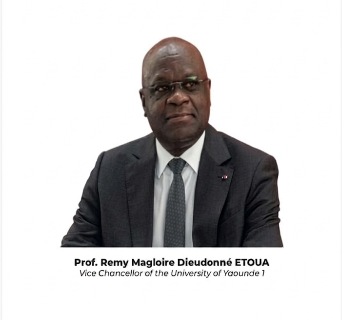
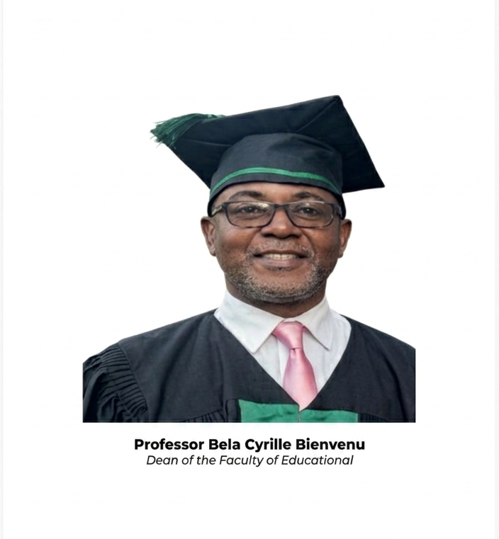
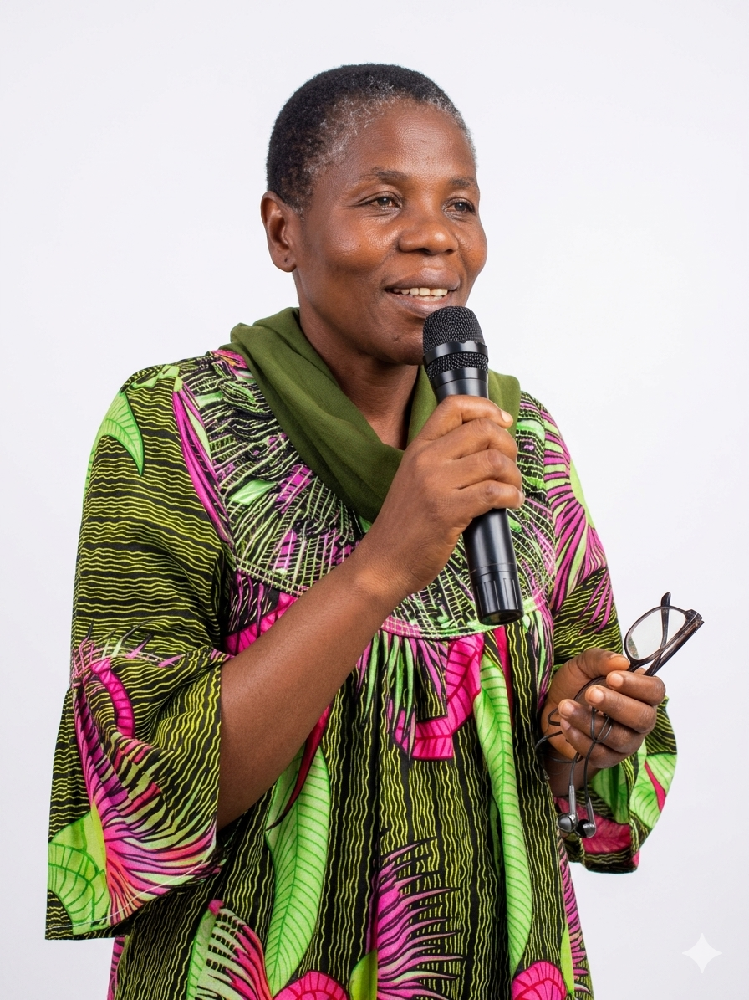
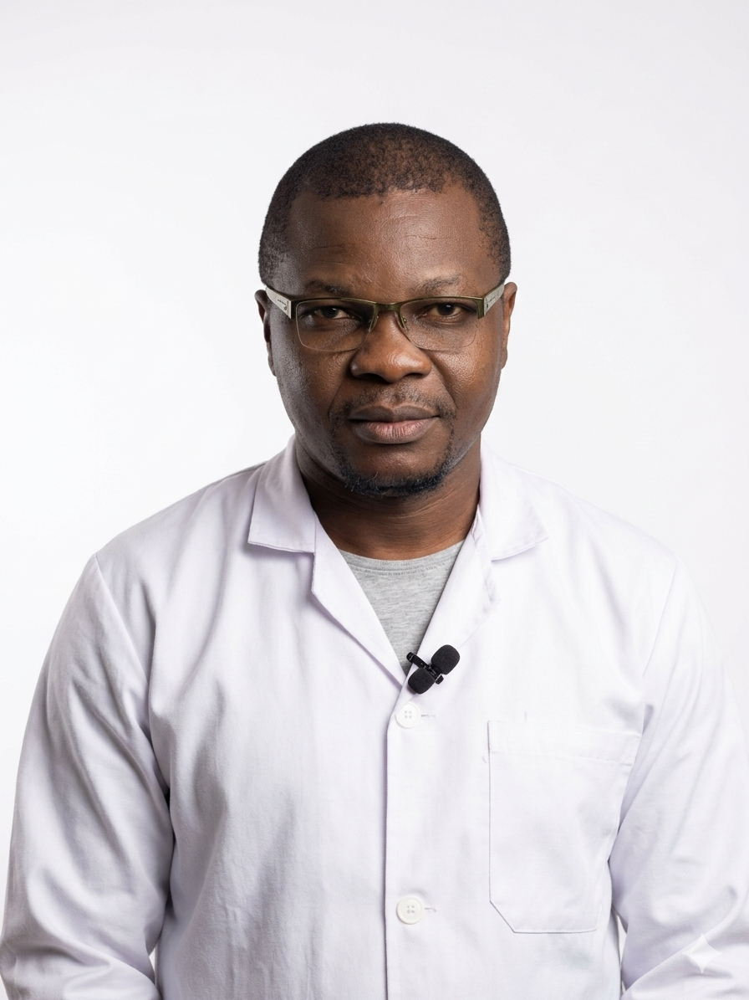
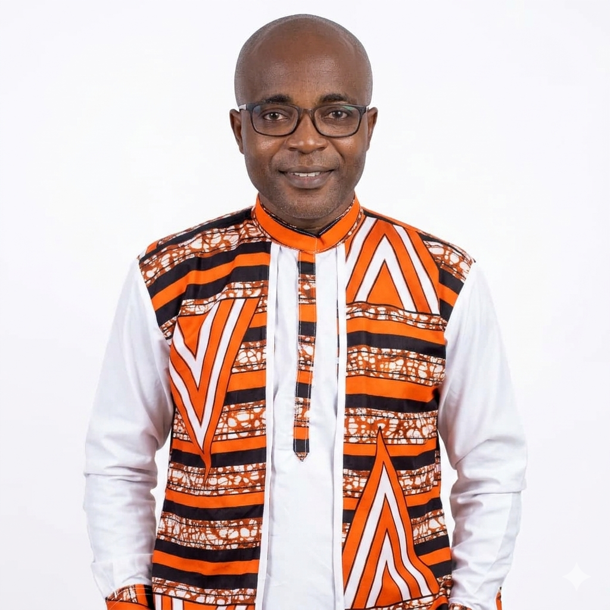
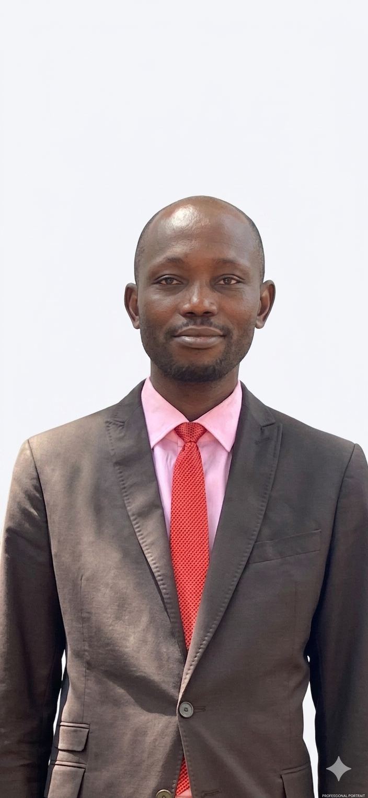

Formation de qualité, excellence académique et employabilité au service du développement éducatif du Cameroun et de l'Afrique Centrale.
Des programmes interdisciplinaires qui allient rigueur scientifique et pertinence professionnelle pour former les cadres de l'éducation de demain.
Comprendre les processus d'apprentissage, de développement cognitif et émotionnel pour améliorer les pratiques éducatives.
Analyser les dynamiques sociales et culturelles qui façonnent les systèmes éducatifs pour promouvoir l'équité et l'inclusion.
Intégrer les technologies de l'information et de la communication pour transformer et moderniser les pratiques d'enseignement.
Notre département forme les experts qui répondent aux besoins réels du secteur éducatif camerounais et africain.
Des enseignements fondés sur la recherche, dispensés par des enseignants-chercheurs spécialisés et reconnus dans leurs domaines.
Nos diplômés intègrent l'enseignement, la recherche, les ONG, les ministères et le secteur privé de l'éducation au Cameroun et en Afrique.
Un environnement de recherche active qui valorise la production scientifique et contribue à l'amélioration des politiques éducatives nationales.
Du premier cycle à la recherche doctorale, nous offrons des formations rigoureuses pour faire de vous un spécialiste des sciences de l'éducation.
Trois niveaux de formation pour accompagner votre développement professionnel et académique à chaque étape de votre trajectoire.
Un processus transparent et équitable pour accueillir les meilleurs candidats issus de tous les horizons académiques.
Rassemblez vos diplômes, relevés de notes, pièce d'identité et lettre de motivation.
Déposez votre dossier au secrétariat du département ou envoyez-le par voie électronique.
La commission pédagogique examine votre profil académique dans un délai de 3 semaines.
Les candidats présélectionnés sont convoqués à un entretien avant la décision finale d'admission.
Enseignant dans le primaire, secondaire ou supérieur ; conseiller pédagogique ; formateur en instituts de formation.
Chercheur dans des universités ou centres de recherche ; doctorant ; auteur de publications scientifiques.
Chargé de programme dans des ONG, agences onusiennes ou projets de développement éducatif en Afrique.
Création d'établissements scolaires, de plateformes e-learning, de centres de formation professionnelle ou de services de conseil pédagogique.
Nos enseignants-chercheurs allient expertise scientifique, rigueur pédagogique et engagement pour l'essor des sciences de l'éducation au Cameroun.
Des profils d'exception, reconnus pour leur excellence académique et leur contribution au développement des sciences de l'éducation.






Le département entretient des relations de coopération avec des institutions universitaires africaines et internationales, favorisant la mobilité des chercheurs et l'enrichissement mutuel.
Ateliers de développement des pratiques d'enseignement, formation aux méthodes actives et aux approches par compétences.
Soutien institutionnel pour la publication dans des revues indexées et l'accès aux appels à projets de recherche nationaux et internationaux.
Accompagnement structuré des doctorants par des directeurs de thèse expérimentés, avec suivi régulier et participation aux jurys.
Chaque programme est conçu avec rigueur scientifique, pertinence professionnelle et engagement pour le développement éducatif du Cameroun.
Une formation centrée sur les dimensions psychologiques de l'apprentissage et du développement humain appliqués à l'éducation.
Cette formation explore les fondements psychologiques de l'apprentissage, de l'enseignement et du développement humain. Elle forme des spécialistes capables d'analyser les comportements d'apprentissage, d'identifier les difficultés scolaires et de proposer des interventions adaptées.
Les diplômés maîtrisent des outils d'évaluation psychopédagogique et peuvent exercer dans les établissements scolaires, les centres de formation et les institutions de recherche.
Une approche critique et sociale pour analyser les systèmes éducatifs dans leurs contextes culturels, économiques et politiques.
Ce programme situe l'éducation dans son contexte social, culturel et politique. Il forme des experts capables d'analyser les inégalités éducatives, les dynamiques communautaires et les politiques d'inclusion scolaire en Afrique.
Les étudiants acquièrent une solide culture sociologique et des compétences en enquête de terrain, particulièrement précieuses pour intervenir dans des contextes multiculturels comme le Cameroun.
Former des experts de l'intégration pédagogique des technologies pour moderniser l'enseignement en Afrique subsaharienne.
Cette formation prépare des spécialistes capables d'intégrer les technologies de l'information et de la communication dans des contextes éducatifs variés. Elle conjugue fondements pédagogiques, ingénierie de formation et maîtrise des outils numériques.
Dans un contexte africain en pleine transformation numérique, nos diplômés répondent à une demande croissante des établissements, ministères et organisations internationales.
Nos diplômés s'intègrent dans des secteurs variés et jouent un rôle clé dans le développement éducatif du Cameroun et de l'Afrique Centrale.
Enseignant dans le primaire, secondaire et supérieur ; conseiller pédagogique ; inspecteur de l'enseignement.
Chercheur en université ou centre de recherche ; directeur de thèse ; expert scientifique auprès d'institutions.
Consultant pédagogique pour écoles, entreprises et gouvernements ; expert en évaluation des systèmes éducatifs.
Chargé de programme éducatif dans des ONG, agences onusiennes, projets bilatéraux ou organisations régionales africaines.
Création d'établissements scolaires, de centres de formation, de plateformes numériques ou de services d'appui pédagogique.
Nos diplômés s'intègrent dans des secteurs variés au Cameroun et en Afrique Centrale, portés par une formation rigoureuse et une expertise reconnue.
Accompagnement psychologique des élèves en difficulté dans les établissements primaires et secondaires.
Guidance des élèves et étudiants dans leurs choix d'études et de carrière professionnelle.
Enseignement des disciplines psychopédagogiques dans le secondaire et le supérieur.
Conduite de recherches sur l'apprentissage, la motivation et le développement cognitif en milieu scolaire.
Conseil auprès d'établissements, ministères et organisations pour améliorer la qualité des systèmes éducatifs.
Conception et mise en œuvre de dispositifs d'aide aux élèves en difficulté d'apprentissage.
Formation des enseignants et des agents éducatifs dans les instituts de formation et les universités.
Étude des dynamiques sociales et culturelles qui façonnent les systèmes éducatifs africains.
Analyse et conception de réformes éducatives pour les gouvernements et organisations internationales.
Gestion de programmes éducatifs pour des organisations non gouvernementales et agences onusiennes.
Évaluation et diagnostic des systèmes d'enseignement en vue d'améliorer leur efficacité et équité.
Promotion de l'accès équitable à l'éducation pour les populations marginalisées et vulnérables.
Conception de dispositifs d'apprentissage numérique adaptés aux contextes éducatifs africains.
Création de contenus et parcours d'apprentissage en ligne pour établissements et entreprises.
Gestion et déploiement de systèmes LMS (Moodle, Canvas, etc.) dans les institutions d'enseignement.
Formation des enseignants à l'intégration pédagogique des outils numériques dans leurs pratiques.
Accompagnement des établissements dans leur transition numérique et modernisation des pratiques.
Développement d'outils et applications numériques dédiés à l'enseignement et à la formation.
Fondé pour répondre au manque de spécialistes qualifiés en sciences de l'éducation au Cameroun, notre département forme les cadres qui transforment les systèmes éducatifs africains.
Devenir le centre de référence en Afrique Centrale pour la formation de spécialistes en sciences de l'éducation, capables de concevoir, d'évaluer et de transformer les systèmes éducatifs.
Réduire le déficit de cadres qualifiés en sciences de l'éducation au Cameroun en offrant une formation académique rigoureuse, pertinente et ancrée dans les réalités africaines.
Excellence académique · Intégrité scientifique · Professionnalisme · Inclusion et équité · Engagement pour le développement durable de l'éducation africaine.
Le Département d'Enseignement Fondamentaux en Education a été créé en réponse à un constat alarmant : le Cameroun manque cruellement de spécialistes formés scientifiquement pour concevoir, animer et évaluer ses systèmes éducatifs à tous les niveaux.
Rattaché à la Faculté des Sciences de l'Éducation, ce département propose un enseignement de qualité en psychologie de l'éducation, en sociologie et anthropologie de l'éducation, et en TIC en éducation, dans le cadre du système LMD.
Notre ambition est de produire des experts capables d'intervenir dans les établissements scolaires, les ministères, les organisations internationales et les centres de recherche, pour un impact réel et durable sur l'éducation au Cameroun et en Afrique.
Étudiants, chercheurs, partenaires — notre équipe répond à toutes vos questions dans les meilleurs délais.
Pour toute demande sur les formations, admissions ou partenariats, contactez-nous par téléphone, WhatsApp ou via le formulaire.
Département d'Enseignement Fondamentaux en Éducation
Faculté des Sciences de l'Éducation — Yaoundé, Cameroun
Lundi – Vendredi : 7h30 – 15h30
Samedi : 8h00 – 12h00
Faculté des Sciences de l'Éducation · Yaoundé, Cameroun
Intégrez ici votre carte Google Maps
(Remplacer par un iframe Google Maps)